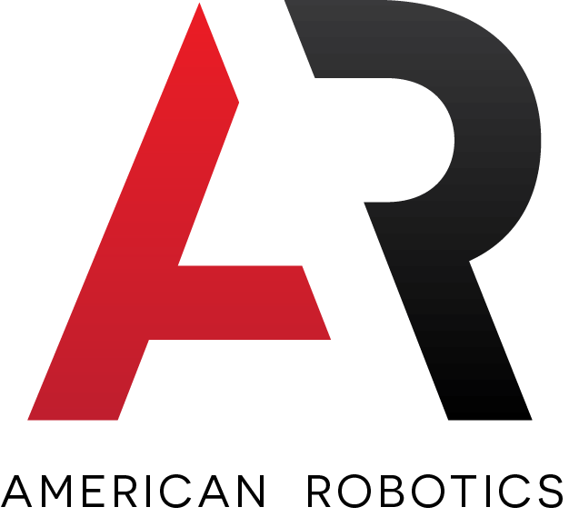

{kind=link}
{kind=link}
2017
Lead Electrical Engineer.
Electrical Engineer with a passion to move society forward through the development of novel systems. My specialities are analog circuit and RF system design. Hacker by nature. Current interests include cognitive science, economics, and sailing.
ResumePhoto Credit: Josh Sousa
These are some of the projects I have worked on.
Otto is the personal cameraman that introduces a new way to capture your life's most exciting moments. The system is an autonomous quadcopter that is designed to follow and record a user performing an individual action sport.
2015 Senior Design Project.
Project SiteAs the TA for an EE course at UMass I designed an audio amp board to use as a mechanism to teach students how to use Altium schematic capture and pcb layout. I worked with other UGTAs to assemble to board and develop the software.
2016 ENGIN112 TA @ UMass.
Project SiteAn autonomous mouse that was tasked with navigating to the center of a 16x16 maze. I was responsible for the electrical system, namely the design of the pcb (including circuit and layout). Note, this was my first design.
2014 MicroMouse Competition.
Board Image LayoutAlong with a team of twelve students, professors, and industry professionals we started the what is now (2016) the largest hacking event in Western MA. Our goal was to bring the hack/entrepreneurship culture to UMass. It was a great success.
2014 HackUMass I.
HackUMassA friend and I hacked a Keurig machine to automatically pour a coffee once one was purchased online. I was responsible for the receiving system (hardware & software). We used Bitcoin to pay for coffee before Bitcoin was cool.
2014 HackBeanPot.
As an undergrad at UMass I was the president of Eta Kappa Nu (HKN) as well as the Vice President of UMass IEEE. I lead our team to opening the first student-run snack shop, a wildly successful fall banquet, and a UMass's first hackathon, HackUMass. I also lead the MicroMouse robotics team to victory at the IEEE R1 student conference.
A timeline of my notable experiences.